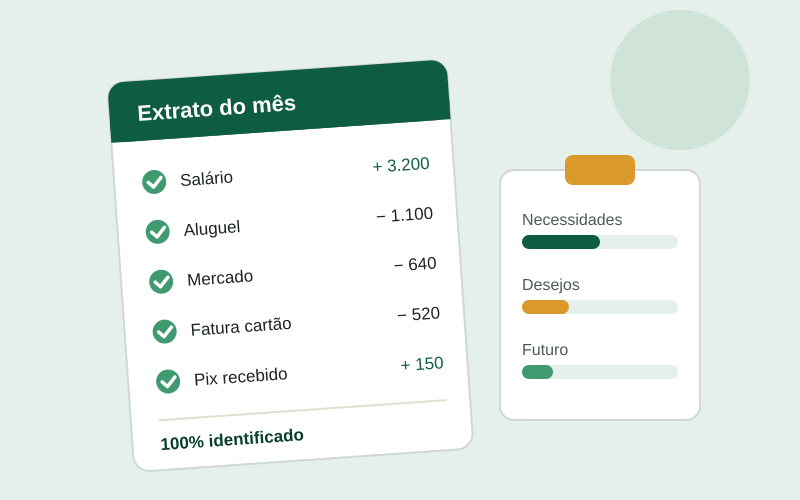
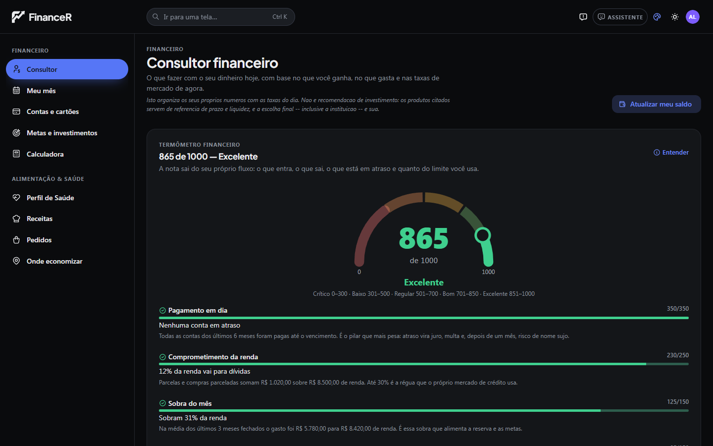
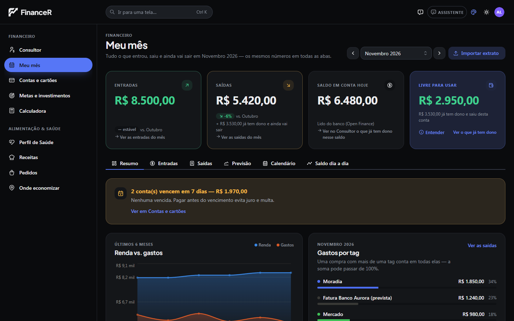
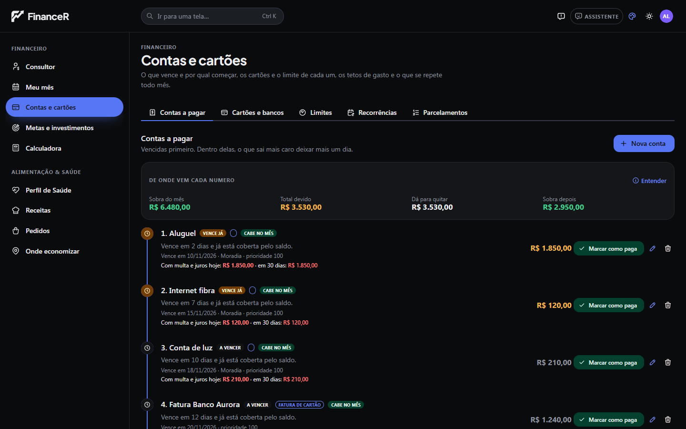
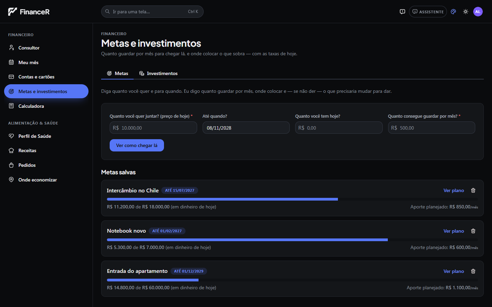

Diagnóstico
Termômetro Financeiro
Uma nota de 0 a 1000, calculada a partir de cinco pilares, que mostra se as suas finanças estão saudáveis e qual ponto atacar primeiro.
Finanças pessoais
O FinanceR Blog explica, em linguagem simples, como organizar a vida financeira: medir a saúde das finanças, conferir o extrato até o último centavo, montar a reserva de emergência e investir com metas claras.
Cada artigo nasce do uso real do FinanceR, um consultor financeiro pessoal que lê contas bancárias de verdade via Open Finance e transforma o extrato em decisões.
Ver os destaquesTrês guias para sair do "não sei onde meu dinheiro foi parar" e chegar no "sei exatamente o que fazer com a sobra". Clique na imagem para ler.
Uma nota de 0 a 1000, calculada a partir de cinco pilares, que mostra se as suas finanças estão saudáveis e qual ponto atacar primeiro.

Como identificar cada linha do extrato, tratar o cartão de crédito do jeito certo e montar um orçamento que fecha no fim do mês.

A ordem certa para usar a sobra do mês: dívida, reserva de emergência, metas e, só então, investimentos de longo prazo.
O blog é a parte escrita de um aplicativo que existe e é usado no dia a dia. Veja as telas e o que cada uma faz.
O FinanceR está em produção e sincroniza contas correntes, cartões e faturas de bancos de verdade via Open Finance. Para proteger a privacidade, os valores, nomes de bancos e lançamentos das telas abaixo foram substituídos por dados fictícios.
Nota de 0 a 1000, ordem de pagamento das contas e sugestão de onde aplicar o dinheiro livre.
Entradas, saídas, saldo em conta e o que está livre para usar, com gastos separados por tag.
Contas a pagar em ordem de prioridade, limites de cartão, recorrências e parcelamentos.
Quanto guardar por mês para cada objetivo e em qual produto, com as taxas do dia.
Saldos e lançamentos chegam direto dos bancos conectados, sem digitar nada à mão.
Cada linha do extrato é reconhecida pelo nome e recebe uma tag; o que se repete vira regra.




Telas reais do FinanceR em produção (financer.notter.com.br), com dados fictícios.
Conteúdo curto, prático e com números, para ler em poucos minutos e aplicar no mesmo dia.
Comece pelo Termômetro: ele mostra se o problema é atraso, cartão, falta de sobra ou falta de reserva.
Depois, coloque o extrato em ordem: toda entrada e toda saída com nome, tag e lugar no orçamento.
Com as contas em dia, a sobra do mês ganha destino: reserva, metas e investimentos.